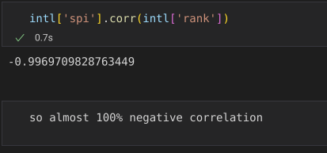

I've chosen: The 538 datasets on world football (soccer) SPI (soccer power index). Specifically the spi_global_rankings csv. you can find a link to that csv here I also used the equivalent csv for club teams found here
I'm using python with pandas with matplotlib and seaborn for visuals here's the link to the ipython notebook. I did all my work in VScode and just did all my commits / uploads to the github repo / this website from there. I used the package documentation as well as geeksforgeeks and stackexchange for refrence on how to properly format the graphs. i documented my progress with markdown in the ipython notebook.
Lately I spend all my time thinking about the world cup, and I've been looking at the 538 predictions game by game. they always use the 'spi' stat in their tables and articles, but i was curious about the role it played and it's distribution. also my husband and i were wondering the question about whether club or national teams were better on average the other day.
I obtained the data from 538's website I downloaded it as a zip file containing 4 CSV files documenting club and national team stats and club and international match stats respectively.
I checked if there were any empty cells in either of the datasets i was using with df.isna().sum() there weren't. the data was actually very clean. a benefit of getting it from 538 rather than kaggle.
I first used the .describe() method to get basic statistics on both datasets.
the question can be answered just by looking at the general stats above: club mean is very slightly above intl mean 40.078 to 39.068 but the international teams have both a higher max and a lower min. I produced some box plots of the respective spi distributions to give us a better understanding.
They show that the club teams are much more concentrated at average while international teams have a much larger spread. I'm slightly suprised that the average is so similar though since club teams are so effected by unequal team wealth.
first I graphed the spi and rank by confed to see the distribution per confederation.
Then I took the avg by confederation.
and displayed them with bar graphs.
and the answer is that for both SPI and rank, CONMEBOL is the best, followed by UEFA. But you can really see how many countries are in UEFA and how spread it is. It would be interesting to compare this to data on avg viewership of conference cups.
This is very easy to figure out using pandas with the .corr() method. I also graphed the rank and spi on two axes of a scatterplot to visualize. The dots are color coded by conference.
As you can see they are very very correlated. almost 100% negative correlation. This makes me wonder if whoever calculates SPI (is it 538?) uses the ranking as a factor. I had thought that it was mostly about player stats and record. Ah ... but the record is what determines the rank. this now seems obvious. Still a bit suprising that its so so correlated though. Football has a higher than average rate of upsets because it's low scoring (which is why it's interesting unlike basketball) so one would think that ranking wouldn't track spi so perfectly.